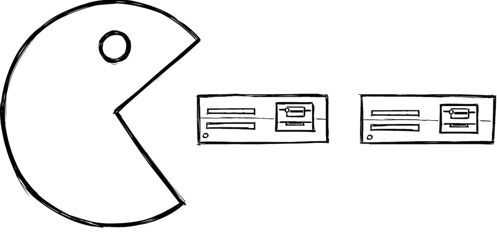
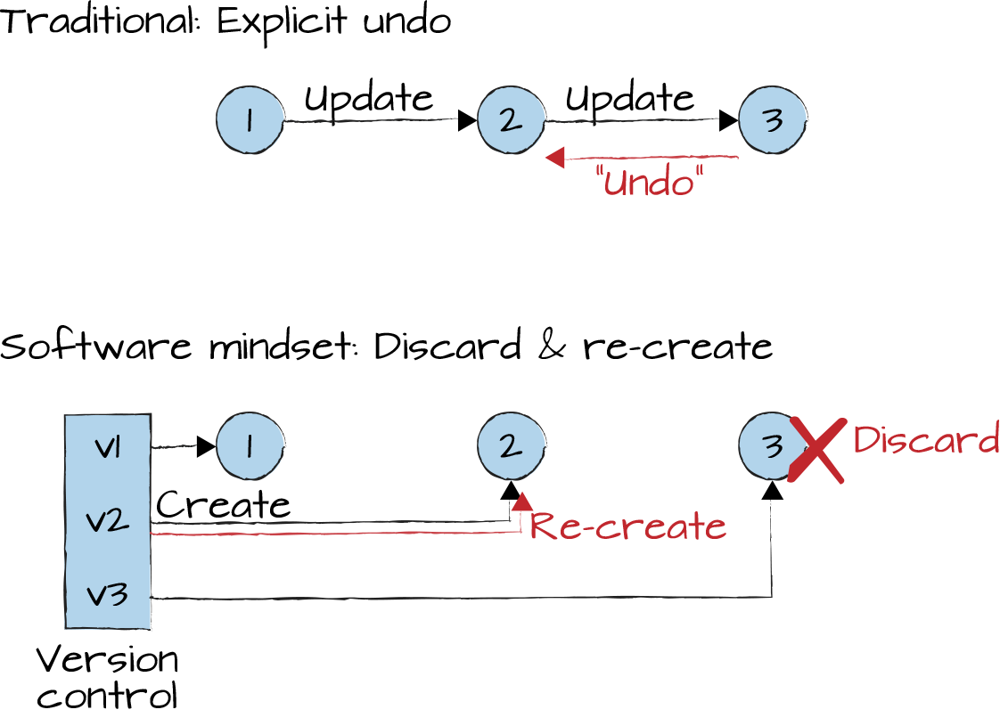

When Your Infrastructure Becomes Software-Defined, You Need to Think Like a Software Developer

If software does indeed eat the world, it will have IT infrastructure for breakfast: the rapidly advancing virtualization of infrastructure from VMs and containers to serverless architectures turns provisioning code onto a piece of hardware into a pure software problem. While this is an amazing capability and one of the major value propositions of cloud computing, corporate IT’s uneasy relationship with code (Chapter 11) and lack of familiarity with the modern development life cycle can make this a dangerous proposition.
Much of traditional IT infrastructure is either hardwired or semi-manually configured: servers are racked and cabled, network switches are manually configured with tools or configuration files. Operations staff, who endearingly refer to their equipment as “metal,” is usually quite happy with this state of affairs: it keeps the programmer types away from critical infrastructure where the last thing you need is bugs and stuff like “Agile” development, which is still widely misinterpreted (Chapter 31) as doing random stuff and hoping for the best.
This is rapidly changing, though, and that’s a good thing. The continuing virtualization of infrastructure makes resources that were once shipped by truck or wired by hand available via a call to a cloud service provider’s API. It’s like going from haggling in a car dealership and waiting four months for delivery just to find out that you should have ordered the premium seats after all to hailing an Uber from your mobile phone and being shuttled off three minutes later.
Virtualized and programmable infrastructure is an essential element to keeping up with the scalability and evolution demands of digital applications. You can’t run an Agile business model when it takes you four weeks to get a server and four months to get it on the right network segment.
Operating system–level virtualization is by no means a new invention, but the “software defined” trend has extended to software-defined networks (SDNs) and full-blown software-defined datacenters (SDDC). If that isn’t enough, you can opt for SDX—software-defined anything, which includes virtualization of compute, storage, network, and whatever else can be found in a datacenter, hopefully in some coordinated manner. Other marketing departments coined the term infrastructure as code (IaC), apparently oblivious to the fact their tools mostly accomplish it via configuration, not code (Chapter 11).
As so often, it’s possible to look into the future of IT by reading Google’s research papers describing its systems of five-plus years ago (the official paper on Borg,1 Google’s cluster manager, was published in 2015, almost a decade after its internal introduction). To get a glimpse of where SDN is headed, look at what Google has done with the so-called Jupiter Network Architecture.2 If you are too busy to read the whole thing, this three-liner will do to get you excited:
Our latest-generation Jupiter network [...] delivering more than 1 Petabit/sec of total bisection bandwidth. This means that each of 100,000 servers can communicate with one another in an arbitrary pattern at 10 Gb/s.
Such capability can be achieved only by having a network infrastructure that can be configured based on the applications’ needs and is considered as an integral part of the overall infrastructure virtualization.
New tools necessitate a new way of thinking, though, to be useful. It’s the old “a fool with a tool is still a fool.” I actually don’t like this saying because you don’t have to be a fool to be unfamiliar with a new tool and a new way of thinking. For example, many folks in infrastructure and operations are far detached from the way contemporary software development is done. This doesn’t make them fools in any way, but it prevents them from migrating into the “software-defined” world. They might never have heard of unit tests, continuous integration (CI), or build pipelines. They may have been led to believe that “Agile” is a synonym for “haphazard” and also haven’t had enough time to conclude that immutability is an essential property because rebuilding/regenerating a component from scratch beats making incremental changes.
As a result, despite being the bottleneck in an IT ecosystem that demands ever-faster changes and innovation cycles, operations teams are often not ready to hand over their domain to the “application folk” who can script the heck out of the software-defined anything. One could posit that such behavior is akin to the Loomer Riots because the economic benefits of a software-defined infrastructure are too strong for anyone to put a stop to it.3 At the same time, it’s important to get those folks on board who keep the lights on and who understand the existing systems the best. So, we can’t ignore this dilemma.
If software eats the world, there will be only two kinds of people: those who tell the machines what to do and those for whom it’s the other way around.
Explaining to everyone What Is Code?4 can be a useful first step. Having more senior management role models who can code would be another good step. However, living successfully in a software-defined world isn’t a simple matter of learning programming or scripting.
A vivid example of how software developers think differently is reversibility; that is, the ability to quickly revert to a known stable state if a new configuration isn’t working.
When our team requested the ability to revert to a known good infrastructure configuration state from an infrastructure vendor, the response was that this would require an explicit “undo” script for each possible action, a huge additional investment in their eyes. Apparently, they didn’t think like software developers.
With manual updates, reverting to a known good state is very difficult and time consuming at best. In a software-defined world, it’s much easier. Experienced software developers know that if their automated build system can build an artifact, such as a binary image or a piece of configuration, from scratch, they can easily revert to a previous version. So, rather than explicitly undoing a change these developers reset version control to the last known good version, rebuild from scratch, and republish this “undone” configuration, as illustrated in Figure 14-1.

This mindset stems from software being ephemeral—re-creating it from scratch isn’t a major effort. By making infrastructure software-defined, it can also become ephemeral. This is a huge shift in mindset, especially when you consider the annual depreciation cost of all that hardware. But only thinking this way can provide the true benefit of being software defined.
In complex software projects, rolling things back is a quite normal procedure, often instigated by the so-called “build cop” after failing automated tests cause the build to go “red.” The build cop will ask the developer who checked in the offending code to make a quick fix or simply revert that code submission. Configuration automation tools have a similar ability to regain a known stable state and can be applied to reverting and automatically reconfiguring infrastructure configurations.
Software-defined infrastructure shuns the notion of “snowflake” or “pet” servers—servers that have been running for a long time without a reinstall, have a unique configuration,footnote:[Just like every snowflake is unique, “snowflake servers” are those that don’t match a standard configuration. and are manually maintained with great care.
“This server has been up for three years” isn’t bragging rights but a risk: who could re-create this “pet” server if it does go down?
In a software-defined world, a server or network component can be reconfigured or re-created automatically with ease, similar to re-creating a Java build artifact. You no longer have to be afraid to mess up a server instance because it can easily be re-created via software in minutes.
Software-defined infrastructure therefore isn’t just about replacing hardware configuration with software, but primarily about adopting a rigorous development life cycle based on disciplined development, automated testing, and CI. Over the past decades, software teams have learned how to move quickly while maintaining quality. Turning hardware problems into software problems allows you to take advantage of this body of knowledge.
One of Google’s critical infrastructure pieces was a router, which would direct incoming traffic to the correct type of service instance. For example, HTTP requests for maps.google.com would be forwarded to a service serving up maps data, as opposed to the search page. The router was configured via a file consisting of hundreds of regular expressions. Of course, this file was under version control, as it should be.
Despite rigorous code reviews, invariably someday someone checked a misconfiguration into the service router, which immediately brought down most of Google’s services because the requests weren’t routed to the corresponding service instance. Luckily, the previous version was quickly restored thanks to version control. Google’s answer wasn’t to disallow changes to this file, because that would have slowed things down. Rather, automatic checks were added to the code submit pipeline to make sure that syntax errors or conflicting regular expressions are detected before the file is checked into the code repository.
When working with software-defined infrastructure, you need to work like you would in professional software development.
One curiosity about Google is that no one working there ever used
buzzwords like “big data,” “cloud,” or “software-defined datacenter” because Google had all these things well before these buzzwords
were created by industry analysts. Much of Google’s infrastructure was already
software defined more than a decade ago. As the scale of applications grew, configuring the many process instances that were being deployed into the datacenter became tedious. For example, if an application consists of seven frontends, 1 through 7, and two backends, A and B, frontends 1 through 4 would connect to backend
A, whereas frontends 5 to 7 would connect to backend B. Maintaining
individual configuration files for each instance would be cumbersome and
error prone, especially as the system scales up and down. Instead,
developers generated configurations via a well-defined functional language
called Borg Configuration Language (BCL), which supports templates, value
inheritance, and built-in functions like map() that are convenient for
manipulating lists of values.
While avoiding the trap of configuration files (Chapter 11), learning a custom functional language to describe deployment descriptors may not be everyone’s cup of tea, but for software developers that’s the natural approach.
When configuration programs became more complex, causing testing and debugging configurations to become an issue, folks wrote an interactive expression evaluator and unit testing tools. That’s what software people do to solve a problem: solve software problems with software!
The BCL example highlights what a real software-defined system looks like: well-defined languages and tooling that make infrastructure part of the software development life cycle. GUIs for infrastructure configuration, which vendors often like to show off, should be banned because they don’t integrate well into a software life cycle, aren’t testable, and are error prone.
There’s much more to being software defined than a few scripts and configuration files. Rather, it’s about making infrastructure part of your software development life cycle (SDLC). First, make sure your SDLC is fast but disciplined, and automated but quality oriented. Second, apply the same thinking to your software-defined infrastructure; or else you may end up with SDA, Software-Defined Armageddon.
1 A. Verma et al., “Large-Scale Cluster Management at Google with Borg,” Google, Inc., https://oreil.ly/uGbf5.
2 Amin Vahdat, “Pulling Back the Curtain on Google’s Network Infrastructure,” Google AI Blog, August 18, 2015, https://oreil.ly/JWczw.
3 After the introduction of the power loom in the UK in the early 1800s led to widespread unemployment and reduction in wages among loomers, they organized to destroy this new type of loom.
4 Paul Ford, “What Is Code?” BusinessWeek, June 11, 2015, https://oreil.ly/n2hmb.